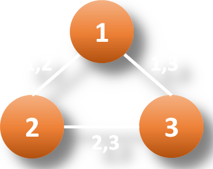
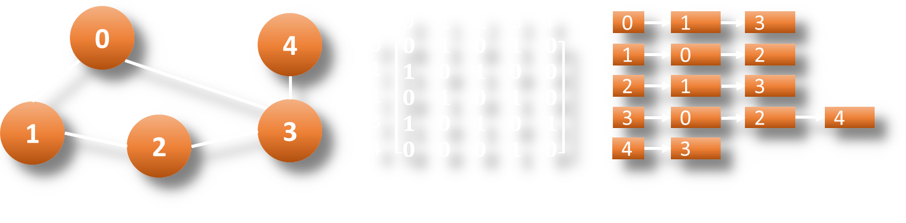
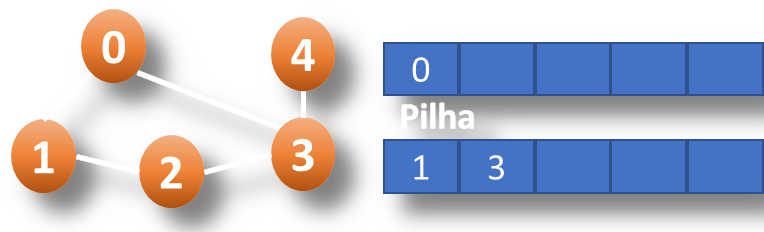
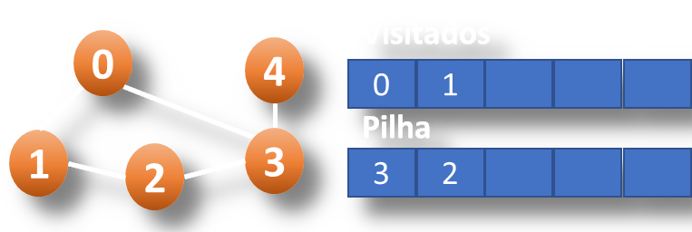
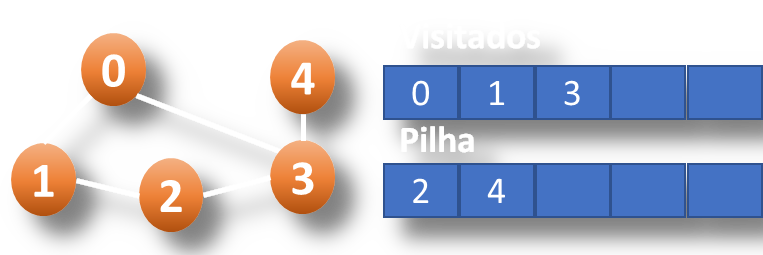
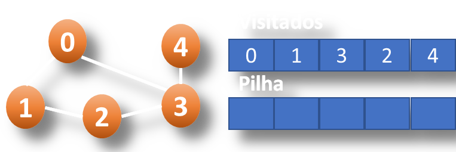

Grafos
Frank Coelho de Alcantara -2020
Definições
Definimos um grafo $G$ como sendo uma tupla formada pelo conjunto de vértices $V$ e o conjunto de arestas $A$ de tal forma que: $G=(V,A)$.
$G_e1=(V,A)| V={1,2,3}∧A={(1,2),(1,3),(2,3)}$
Definições 1
Chamaremos de ordem do grafo $G$ a cardinalidade de $V$ dada por $|V|$ e de tamanho do grafo $G$ a soma da cardinalidade dos conjuntos $V$ e $A$ dada por $|V|+|A|$,
Logo: $grau=|V|=8$ e $tamanho=|V|+|A|=8+6=14$
Chamaremos o gráfico de ordem um $G^1$ de grafo trivial.
Definições 3
Chamaremos de grafo dirigido , ou dígrafo , aos gráficos onde existe uma direção implícita na ligação entre os vértices. No diagrama, representaremos esta direção por uma seta.
Ao gráfico onde não existe qualquer direção explicita nos vértices daremos o nome de grafo não direcionado.
Dependendo do problema representado pelo grafo, pode existir um peso associado a cada aresta. Neste caso chamaremos estes grafos de grafos ponderados.
Chamaremos de caminho , ou em inglês path , ao conjunto de vértices ${v_1,v_2,…,v_n }$ de comprimento $n-1$ se existirem arestas ligando $v_i$ a $v_(i-1)$ para $1≤i≤n$. O comprimento de um caminho é dado pelo número de vértices que ele contém.
Definições 4
Um gráfico não direcionado será dito conectado se existir pelo menos um caminho entre dois vértices quaisquer.
Chamaremos de ciclo ao caminho de comprimento maior ou igual a três que ligue um vértice qualquer a si mesmo. Um grafo sem ciclos será chamado de acíclico.
Um gráfico direcionado sem ciclos é chamado de grafo acíclico direcionado.
Chamaremos de floresta a um grafo sem ciclos e de árvore, ou tree, em inglês, ao grafo conectado sem ciclos.
Árvores e árvores
Do ponto de vista da teoria dos grafos, uma árvore é todo grafo conectado e sem ciclos.
Mas, deste ponto em diante, vamos deixar a palavra árvore para os gráficos, conectados, sem ciclos que tem uma origem definida.
A essa origem daremos o nome de raiz. Definimos assim, as árvores que são tão comuns em problemas computacionais que merecem uma análise específica.
Representação
Podemos representar um grafo por uma matriz de adjacências, ou por uma lista de adjacências.
Código Representação. E lá vamos nós....
Percorrendo Gráficos
Deep First Search 1

Deep First Search 1
Deep First Search 1
Deep First Search 1
Deep First Search 1
Deep First Search 1
Material de apoio
Você pode baixar o material de apoio clicando aqui
Obras Citadas
AHO, A. V. et al.
Compiladores: princípios, técnicas e ferramentas.
2º. ed. Boston, MA, USA: Pearson Education Inc. , 2007.
CASS, S. The 2016 Top Programming Languages. IEEE
Spectrum, 2016. Disponível em: